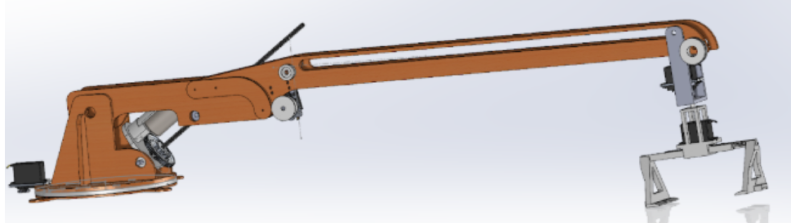
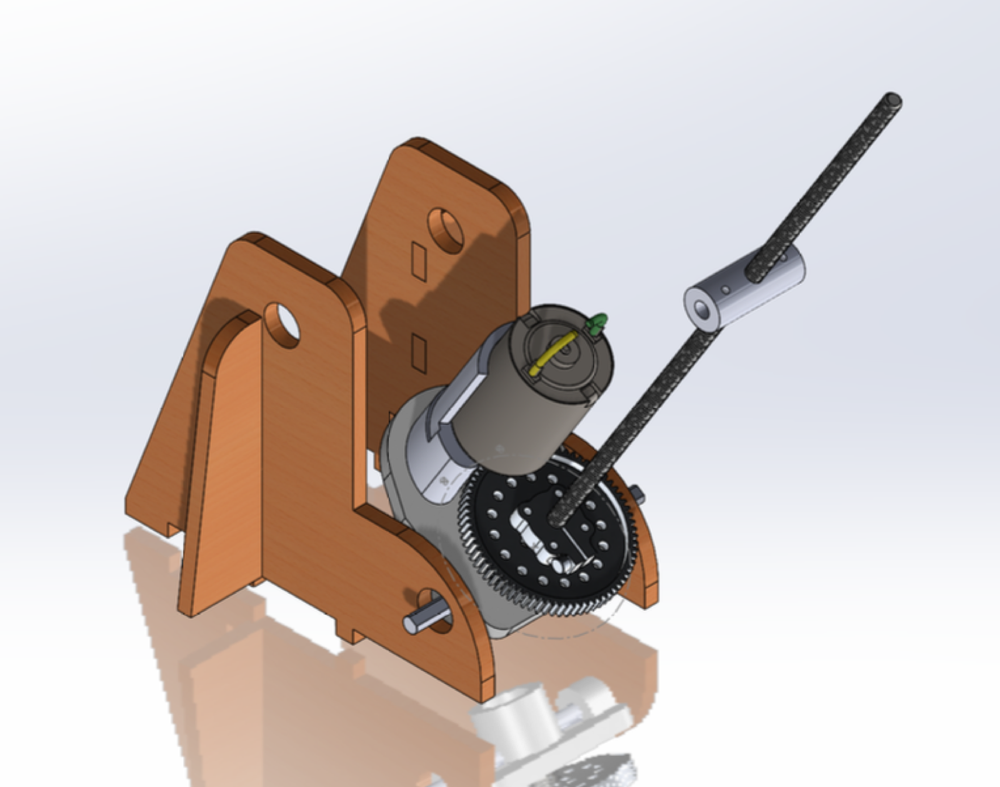

Bridge-Building Robot
Overview
For Dartmouth's Machine Engineering course, my team designed and built a robot that
constructs a bridge across a gap, competing head-to-head
against other teams' robots on speed, weight, and reliability. It was a great learning
experience, with a few rapid design sprints, several full redesigns, and a lot of iteration all in a college term.
The core subsystem of which I was most proud on our robot was a threaded-rod based arm-lifter that raised and lowered the crane
with a precise lead-screw actuator. I iterated through
several versions of the arm and drive mechanism in CAD and with physical prototypes before committing to a final
design. This design linked a brushless motor to the lead screw with an optimized gear ratio that optimized both speed and precision for the competition.
I fabricated our final crane with a mix of CNC milling, manual lathe, laser cutting, and FDM 3D printing.
Gallery



Results
Our crane successfully built a sturdy bridge on competition day, and came in as the lightest robot in the competition. I unfortunately dropped our robot in between competition rounds so we weren't able to maximize our points. Luckily, my group members were very forgiving of this mistake. The full report below discusses what worked with our engineering process, what didn't work, and some reflection on how we'd change our approach the next time around.
Bill of materials for our project
{kind=link}